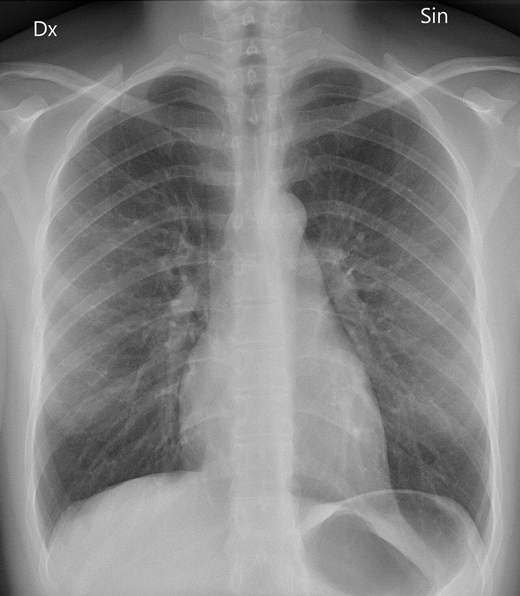

DX.1 — Syndrome de la paroi thoracique
1. Définition et sémantique
Le syndrome de la paroi thoracique est la cause bénigne la plus souvent retenue devant une douleur de la paroi antérieure, car il s’agit d’un trouble musculosquelettiquePMC3444903-10. Ronga le code R07.4 lorsqu’aucune précision supplémentaire n’est disponible, donc le code décrit le siège et non une lésion histologiquePMC3444903-10.
En soins primaires, L04 retient la douleur de la paroi ou de l’appareil locomoteur, tandis que A11 laisse une douleur thoracique sans autre précisionPMC3444903-10. Costochondrite, syndrome costosternal, douleur chondrocostale et glissement costal entrent dans ce cadrePMC3444903-10.
La douleur intercostale, le syndrome chondrocostal gauche, le syndrome pectoral gauche et le syndrome sternal y entrent aussiPMC3444903-10. La fibromyalgie est incluse, en revanche le traumatisme, la métastase et la douleur projetée du dos en sont exclusPMC3444903-10.
Appeler Tietze toute douleur chondrocostale est inexact, car ce nom n’est admis qu’avec une tuméfactionPMC2072948-33. La cohorte lausannoise n’a d’ailleurs reconnu ni vrai syndrome de Tietze ni polyarthrite rhumatoïde, donc l’inflammation franche n’est pas le cas habituelPMC2072948-23.
La fenêtre décrit le mécanisme, l’exemple et le piège, car le libellé ouvre une notion technique.
Le syndrome se distingue de la maladie coronarienne parce que la cohorte sépare les deux diagnostics au lieu de les confondrePMC2072948-11. Il se distingue aussi de l’embolie pulmonaire, puisque le premier geste clinique consiste à l’écarter en même temps que le syndrome coronarien aiguPMC3444903-5. Un point douloureux ne suffit pas à franchir cette frontière, car on le note aussi dans d’autres originesPMC2072948-21.
2. Épidémiologie (Suisse, puis Europe)
Cinquante-huit cabinets privés ont inclus, de mars à mai 2001, toute douleur thoracique consécutive pendant une période médiane de cinq semainesPMC2072948-2PMC2072948-6. Sur 24 620 rencontres, 672 personnes consultaient pour cette douleur, ce qui représente 2,7 pour centPMC2072948-11.
Trois cents d’entre elles ont reçu le diagnostic de syndrome de paroi, soit 44,6 pour cent des douleursPMC2072948-11. Ce volume équivaut à 1,2 pour cent de l’ensemble des consultations, alors que les 84 maladies coronariennes n’en représentent que 0,34 pour centPMC2072948-11.
Les auteurs jugent le syndrome trois fois plus fréquent que les douleurs cardiaques, et le cabinet en voit un à deux cas par semainePMC2072948-21. Le rapport des sexes y est de 1 pour 1, avec 155 femmes et 145 hommesPMC2072948-3PMC2072948-12.
L’âge moyen atteint 50,3 ans, l’écart-type 18,2 ans, et les âges vont des adolescents jusqu’au-delà de 75 ansPMC2072948-12. L’épisode était inaugural dans 62 pour cent des cas, ancien ou récidivant dans 35 pour cent, et indéterminé dans 3 pour centPMC2072948-12.
Une comorbidité existait chez 250 personnes, soit 83 pour cent, dont une comorbidité psychiatrique chez 149, soit 50 pour centPMC2072948-12. Cent personnes avaient donc une comorbidité cardiovasculaire, soit 33,3 pour cent, et 19 une maladie coronarienne déjà connue, soit 6 pour centPMC2072948-12.
Six néoplasies étaient connues, dont deux cancers du poumon, donc le terrain tumoral n’était pas nulPMC2072948-12. Le suivi a été complet à trois mois et de 97 pour cent à douze moisPMC2072948-11.
Pendant l’année de suivi, 171 personnes, soit 57 pour cent, ont présenté une récidivePMC2072948-20. La méta-analyse attribue 48,8 pour cent à Verdon 2008, intervalle 45,0 à 52,7, et ce chiffre ne remplace pas 44,6 pour centPMC4655927-37PMC2072948-11.
La fourchette des études à faible biais va de 24,5 à 49,8 pour cent pour le syndrome de paroiPMC4655927-18. L’incidence en soins primaires va de 20,4 à 46,6 pour cent selon les études récentes citées par RongaPMC3444903-5.
| Chiffre | Population | Année | Source |
|---|---|---|---|
| Le rapport des sexes est de 1 pour 1, avec 155 femmes et 145 hommesPMC2072948-3PMC2072948-12. | Le compte porte sur les 300 syndromes de paroiPMC2072948-11. | Le rapport de cohorte est publié en 2007PMC2072948-1. | Verdon et ses collègues décrivent cette cohorte lausannoisePMC2072948-1. |
| L’âge moyen atteint 50,3 ans, et l’écart-type 18,2 ansPMC2072948-12. | Les âges vont des adolescents jusqu’au-delà de 75 ansPMC2072948-12. | Le même article de 2007 donne cet âgePMC2072948-1PMC2072948-12. | La source reste la cohorte de VerdonPMC2072948-1. |
| La récidive concerne 171 personnes, soit 57 pour centPMC2072948-20. | Le suivi atteint 97 pour cent à douze moisPMC2072948-11. | Ce suivi est celui du rapport de 2007PMC2072948-1PMC2072948-20. | Verdon rapporte cette histoire naturellePMC2072948-20. |
| L’incidence citée va de 20,4 à 46,6 pour centPMC3444903-5. | La fourchette concerne les soins primairesPMC3444903-5. | Ronga publie cette synthèse en 2012PMC3444903-1. | Ronga réunit ici plusieurs études de premier recoursPMC3444903-5. |
La durée d’inclusion allait de 3 à 9 semaines, avec une médiane de 5 semainesPMC2072948-6. Dans cette cohorte, 90 pour cent des personnes étaient déjà connues du cabinet consultéPMC2072948-12.
Une comorbidité rhumatologique était notée chez 62 personnes, soit 20,7 pour cent de la cohortePMC2072948-12. Deux spondyloarthrites étaient connues, alors qu’aucune polyarthrite rhumatoïde n’était recensée dans ce groupePMC2072948-12.
Le groupe cardiovasculaire hors maladie coronarienne représentait 3,4 pour cent des douleursPMC2072948-11. La paroi dans son ensemble représentait 51 pour cent, dont 4 pour cent de douleurs traumatiques et 2,4 pour cent de causes diversesPMC2072948-11.
Le groupe respiratoire représentait 10 pour cent, et le groupe digestif 8 pour cent des douleursPMC2072948-11. Aucune cause n’avait été retenue chez 4 pour cent des personnes douloureusesPMC2072948-11.
Le groupe cardiovasculaire des études à faible biais va de 13,8 à 16,1 pour centPMC4655927-18. La coronaropathie stable des mêmes études va de 6,6 à 11,2 pour centPMC4655927-18.
Le syndrome coronarien aigu ou l’infarctus va de 1,5 à 3,6 pour centPMC4655927-18. Le groupe respiratoire va de 10,3 à 18,2 pour cent, et le groupe psychogène de 9,5 à 18,2 pour centPMC4655927-18.
Dans ces études, le groupe digestif va de 5,6 à 9,7 pour cent des douleursPMC4655927-18. L’œsophage rapporté pour Verdon est à 7,1 pour cent, avec un intervalle de 5,4 à 9,4PMC4655927-36.
La cohorte hessoise compte 1 212 personnes, dont 179 maladies coronariennes, soit 14,8 pour centPMC3853238-34. La douleur psychogène y compte 115 personnes, ce qui représente 9,5 pour centPMC3853238-34.
L’infection des voies aériennes supérieures y compte 98 personnes, soit 8,1 pour centPMC3853238-34. L’hypertension artérielle y est retenue chez 48 personnes, soit 4,0 pour centPMC3853238-34.
Le reflux y compte 42 personnes, soit 3,5 pour cent, et le traumatisme 39 personnes, soit 3,2 pour centPMC3853238-34. Les troubles gastriques sont retenus chez 26 personnes, soit 2,1 pour cent de la cohortePMC3853238-34.
La pleuropneumonie est retenue chez 25 personnes, soit 2,1 pour cent de la cohortePMC3853238-34. La bronchopneumopathie ou l’asthme sont retenus chez 23 personnes, soit 1,9 pour centPMC3853238-34.
Les autres diagnostics regroupent 52 personnes, ce qui représente 4,3 pour centPMC3853238-34.
3. Physiopathologie
Les zones douloureuses siègent sur les insertions musculaires ou tendineuses, sur le cartilage et sur les jonctions ostéochondralesPMC2072948-23. L’étiologie du syndrome reste mal définie, en revanche son caractère mécanique est clairement documentéPMC2072948-23.
La position, le mouvement, le décubitus ou la respiration amplifient la douleur chez 71 pour cent des personnesPMC2072948-13. L’anxiété peut augmenter la sensibilité d’un point tenu pour menaçant, ainsi que le texte le reprendPMC2072948-23.
Une toux longue, une thoracotomie ou le surmenage respiratoire de l’asthme peuvent favoriser l’épisode, donc le déclencheur change selon la personnePMC2072948-23.
Le schéma retenu montre la face antérieure du sternum et des cartilages costaux, en planche d’anatomie et non en cliché de patient. Le fichier original n’est pas modifié : les quatre repères sont dessinés dans un calque séparé.

Le premier repère indique le manubrium, le deuxième indique le corps et le troisième indique le xiphoïde. Le quatrième repère désigne les jonctions chondrocostales gauches, là où le syndrome localisé est le plus souvent décritPMC2072948-33.
Cette planche associe donc le siège anatomique au mécanisme d’insertion, et elle ne montre pas une inflammationPMC2072948-23. La prédominance gauche reste inexpliquée, car l’auteur ne retient qu’une hypothèse d’innervation convergente, et non une preuvePMC2072948-22.
Le diagnostic a été posé sans critères standards et sans supervision extérieure, donc des erreurs restaient possiblesPMC2072948-25. Le suivi d’une année sert précisément à reconnaître les maladies graves prises au début pour ce syndromePMC2072948-25.
La maladie coronarienne et le syndrome de paroi peuvent coexister, ainsi que le texte le note après une thoracotomiePMC2072948-25. Dans un service d’urgence de la même région et de la même période, la maladie coronarienne devenait la cause principalePMC2072948-25.
Le syndrome y était surtout décrit comme aigu, ce qui suggère que cette forme rare oriente vers l’urgencePMC2072948-25.
La fenêtre décrit le mécanisme, l’exemple et le piège, car le libellé ouvre une notion technique.
On lit d’abord le sternum de haut en bas, puis les cartilages qui rejoignent les côtes. Le piège serait de prendre la légende anglaise déjà imprimée pour une annotation de ce cours : les numéros français sont seulement dans le calque.
| Perturbation | Exploration qui la montre | Moyen qui la corrige |
|---|---|---|
| La douleur naît sur une insertion ou une jonction chondrocostale, et l’inflammation franche reste l’exceptionPMC2072948-23. | La planche situe le manubrium, le corps, le xiphoïde et les jonctions gauches. | Nommer le syndrome rassure davantage que le seul rejet d’une maladie gravePMC2072948-24. |
| La position, le mouvement, le décubitus ou la respiration amplifient la douleur chez 71 pour cent des personnesPMC2072948-13. | L’anamnèse cherche donc ces facteurs mécaniques, dont le rapport de cotes vaut 1,54PMC2072948-32. | La dose efficace la plus faible, pendant la durée la plus courte, vise ce symptômeaips_irfen_dolo_fr-3. |
| L’anxiété peut augmenter la sensibilité d’un point tenu pour menaçantPMC2072948-23. | L’inquiétude clinique est notée, et elle retire un point à la règle de paroi lorsqu’elle est présentePMC3444903-3. | Un diagnostic précis de syndrome de paroi est jugé rassurant dans ce textePMC2072948-24. |
4. Démarche diagnostique
Avant de retenir ce diagnostic, le syndrome coronarien aigu et l’embolie pulmonaire sont écartés, car ce sont les deux causes vitales nommées en premierPMC3444903-5. La maladie coronarienne occupe 12,5 pour cent des douleurs suisses et garde le rang E1, sans céder sa place à la fréquencePMC2072948-11.
L’embolie pulmonaire n’a pas de pourcentage de premier recours dans les extraits, donc elle reçoit le rang E2 sans rang de fréquencePMC3444903-5. Une palpation qui reproduit la douleur ne fait pas sortir la personne du rang E1, ni du rang E2PMC2072948-21.
Une fois ces deux rangs abordés, les quatre caractères ou plus parmi les six donnent une sensibilité de 0,82PMC2072948-16. La validation externe a néanmoins classé trois angors stables parmi les faux positifs, soit 1,8 pour cent de tous les positifsPMC3444903-24.
| Concurrent | Ce qui le sépare du syndrome | Piège | Conduite |
|---|---|---|---|
| Maladie coronarienne, rang E1PMC2072948-11. | Douleur rétrosternale, effort, durée de une à soixante minutes, absence de point douloureuxPMC2832616-20. | Le côté gauche prédomine dans le syndrome et fait craindre le cœurPMC2072948-26. | Le diagnostic de paroi attend que ce concurrent ait été examinéPMC3444903-5. |
| Embolie pulmonaire, rang E2PMC3444903-5. | Aucun pourcentage de premier recours n’est disponible iciPMC3444903-5. | Le point douloureux est décrit dans l’emboliePMC2072948-21. | La démarche de l’embolie continuePMC3444903-5. |
| Traumatisme, 4 pour cent dans la cohorte suissePMC2072948-11. | Ronga le retire de la définitionPMC3444903-10. | Une douleur pariétale après choc n’est pas ce syndromePMC3444903-10. | L’histoire du choc décidePMC2072948-11. |
| Syndrome de Tietze, sans fréquencePMC2072948-23. | La tuméfaction est exigéePMC2072948-33. | La costochondrite sans tuméfaction n’en est pas unPMC2072948-33. | On garde le nom de syndrome de paroiPMC2072948-23. |
5. Anamnèse ciblée et drapeaux rouges
On cherche d’abord l’absence de caractère constrictif, dont le rapport de cotes vaut 2,53, intervalle 1,21 à 5,28PMC2072948-32. On cherche ensuite une douleur bien localisée, rapport 2,10, intervalle 1,37 à 3,22PMC2072948-32.
Une douleur non liée à l’effort porte un rapport de 1,58, intervalle 1,00 à 2,49PMC2072948-32. Les facteurs mécaniques portent un rapport de 1,54, intervalle 1,06 à 2,24PMC2072948-32.
La localisation gauche ou médio-gauche porte un rapport de 2,28, intervalle 1,58 à 3,28PMC2072948-32. L’intensité était modérée dans 75 pour cent des cas et sévère dans 23 pour centPMC2072948-13.
Des accès de quelques secondes à quelques jours concernaient 50 pour cent des personnes, et une douleur continue 35 pour centPMC2072948-13. La forme aiguë intense concernait 9 pour cent, et l’anxiété passait alors de 54 à 93 pour centPMC2072948-15PMC2072948-13.
L’inquiétude clinique passait de 10 à 26 pour cent entre la douleur modérée et la douleur aiguë intensePMC2072948-15. L’irradiation touchait donc le bras gauche chez 18 personnes, le bras droit chez 4, le dos chez 5, le cou ou l’abdomen chez 3PMC2072948-13.
La douleur dure des heures, des jours ou des semaines, et elle est le plus souvent bien localiséePMC2072948-13. Le côté gauche prédomine sur le côté droit, sans que cette latéralité ferme le diagnostic coronarienPMC2072948-13PMC2072948-21.
| Signal d’alerte | Ce qu’il signifie | Décision |
|---|---|---|
| Durée de une à soixante minutes, effort, siège rétrosternalPMC2832616-38. | Ces caractères ajoutent des points au score coronarienPMC2832616-20. | Le rang E1 reste ouvertPMC3444903-5. |
| Inquiétude clinique présentePMC3444903-3. | La règle de paroi compte au contraire l’absence d’inquiétudePMC3444903-3. | Ce point de la règle est perduPMC3444903-3. |
| Antécédent cardiovasculaire, qui vaut deux pointsPMC2832616-20. | Dix-neuf syndromes coexistaient avec une maladie coronariennePMC2072948-12. | La coexistence n’est pas niée par le diagnostic de paroiPMC2072948-3. |
La fenêtre décrit le mécanisme, l’exemple et le piège, car le libellé ouvre une notion technique.
À intensité modérée, 54 pour cent des personnes expriment une anxiété et l’inquiétude clinique est notée dans 10 pour cent des casPMC2072948-15. À intensité aiguë, ces parts montent à 93 et à 26 pour cent, donc l’acuité change l’alarme sans changer le siègePMC2072948-15.
6. Examen physique ciblé, région par région
La palpation ne compte que si le point recouvre la douleur spontanée, le plus souvent d’un seul côtéPMC2072948-21. Ce point était présent chez 214 des 300 personnes, donc son absence n’élimine pas à elle seule le syndromePMC2072948-13.
Le rapport de cotes imprimé pour cette reproduction est 5,72, tandis que l’intervalle joint, de 1,20 à 5,28, ne le contient pasPMC2072948-32. Parmi 210 douleurs à siège unique, un syndrome précis a été nommé chez 195 personnesPMC2072948-18.
Le syndrome chondrocostal gauche comptait 70 personnes, le syndrome pectoral gauche 40, et le syndrome sternal 28PMC2072948-18. Quatre-vingt-huit personnes avaient plusieurs sièges, et 17 une douleur trop diffuse pour être nomméePMC2072948-18.
Le sternal haut représentait 2,6 pour cent des 195, le sternal 14,4 pour cent et la xiphoïdalgie 3,1 pour centPMC2072948-32. Le pectoral gauche représentait 20,5 pour cent contre 3,1 à droite, et l’axillaire gauche 6,2 contre 2,6PMC2072948-33.
Le syndrome chondrocostal gauche représentait 35,8 pour cent, contre 6,2 pour cent à droitePMC2072948-33. Les totaux donnaient 65,5 pour cent à gauche, 20,0 au milieu et 14,5 à droitePMC2072948-33.
Les étages gauches deux et trois valaient 8,7 pour cent, les étages quatre à six 19,0, et les étages sept à neuf 8,2PMC2072948-33. À droite, les mêmes étages valaient 1,0, 2,1 et 3,1 pour centPMC2072948-33.
La pointe costale valait 3,1 pour cent à gauche et 2,6 à droitePMC2072948-33. Huit personnes ont reçu un diagnostic costovertébral, sans point douloureux, la douleur semblant venir du rachisPMC2072948-14.
Trois personnes décrivaient des élancements brefs, dits attrape thoracique, qui peuvent aussi siéger à droitePMC2072948-14. Une toux ou une dyspnée prolongée était donc notée chez 31 personnes, soit 10 pour cent, avec une douleur droite de 26 contre 11 pour centPMC2072948-31.
Vingt personnes, soit 7 pour cent, présentaient une anxiété, et leur âge moyen était de 43 ans contre 51 ansPMC2072948-31. Dans ce sous-groupe anxieux, la douleur constrictive concernait 55 pour cent des personnes, contre 23 pour cent chez les autresPMC2072948-31.
L’humeur anxieuse inaugurait l’épisode chez 40 pour cent d’entre elles, contre 11 pour cent chez les autresPMC2072948-31. La fibromyalgie concernait 10 personnes, soit 3 pour cent, et 9 d’entre elles sur 10 étaient des femmesPMC2072948-31.
Huit personnes, soit 3 pour cent, décrivaient un syndrome après thoracotomie, long et récidivantPMC2072948-31. Huit autres personnes, soit 3 pour cent, avaient un trouble rhumatologique associéPMC2072948-31.
Parmi elles, l’ostéoporose concernait 3 personnes, la spondyloarthrite 2, l’arthrite 2 et la radiothérapie 1PMC2072948-31.
La fenêtre décrit le mécanisme, l’exemple et le piège, car le libellé ouvre une notion technique.
Le doigt appuie doucement sur le siège montré, car c’est l’empreinte décritePMC2072948-21. Un point éloigné de la douleur spontanée est écarté, puisqu’il n’a pas la valeur retenuePMC2072948-21. Le signe reste non spécifique, car on le retrouve dans la maladie coronarienne, l’embolie, la plèvre, la néoplasie et la douleur psychogènePMC2072948-21.
7. Approche syndromique (7.1, 7.2…)
7.1 Syndrome chondrocostal et syndrome pectoral
Le syndrome chondrocostal gauche est le plus nombreux des syndromes isolés, avec 70 personnes sur les 195 nomméesPMC2072948-18. Le syndrome pectoral gauche vient ensuite, avec 40 personnes, et c’est lui qui concentre presque toutes les présentations aiguësPMC2072948-18PMC2072948-26.
L’origine musculaire de ce siège pectoral explique l’irradiation fréquente vers le bras gauchePMC2072948-26.
7.2 Syndrome sternal et attrape thoracique
Le syndrome sternal comptait 28 personnes, et le sternal haut peut venir de l’articulation sternoclaviculaire ou manubriosternalePMC2072948-18PMC2072948-26. L’attrape thoracique, trois personnes dans la cohorte, est fréquent dans la vie mais rarement motif de consultationPMC2072948-14.
7.3 Ce qui reste hors du syndrome
Le traumatisme, la métastase et la douleur venue du dos restent hors définition, même si la douleur est antérieurePMC3444903-10. La fibromyalgie, en revanche, reste à l’intérieur de la définition retenue par RongaPMC3444903-10.
Le syndrome pectoral, et même le syndrome axillaire, explique pratiquement toutes les présentations aiguësPMC2072948-24. Les patientes redoutent alors un cancer du sein, tandis que d’autres redoutent une maladie coronariennePMC2072948-24.
Le syndrome sternal haut peut venir d’une subluxation, d’une arthrite, d’un syndrome SAPHO ou de l’articulation manubriosternalePMC2072948-24. Deux personnes de la cohorte illustraient l’association avec un psoriasis ou une spondyloarthropathiePMC2072948-24.
La xiphoïdalgie et les syndromes des côtes basses peuvent durer des décennies et être pris pour une maladie digestivePMC2072948-24.
| Forme | Signe fonctionnel | Signe physique |
|---|---|---|
| Chondrocostal gauche, 70 personnesPMC2072948-18. | Douleur localisée sur les jonctions, souvent mécaniquePMC2072948-23. | Point concordant, sans tuméfaction exigéePMC2072948-33. |
| Pectoral gauche, 40 personnesPMC2072948-18. | Présentation souvent aiguë, irradiation possible vers le brasPMC2072948-26. | Sensibilité du muscle pectoral au siège montréPMC2072948-21. |
| Sternal, 28 personnesPMC2072948-18. | Douleur médianePMC2072948-32. | Point sur le sternum ou le xiphoïdePMC2072948-32. |
8. Diagnostic positif et critères
Avec quatre caractères ou davantage, la sensibilité atteint 0,82, intervalle 0,78 à 0,86, et la spécificité 0,54, intervalle 0,48 à 0,59PMC2072948-16. Avec cinq ou six caractères, la sensibilité diminue à 0,61 et la spécificité augmente à 0,83PMC2072948-16.
Les intervalles correspondants vont de 0,55 à 0,66 pour la sensibilité, puis de 0,79 à 0,87 pour la spécificitéPMC2072948-16. La règle de Ronga porte deux points pour la palpation et un point pour chacune des cinq autres variables, soit un total de 7PMC3444903-3.
Dans la dérivation, l’aire sous la courbe atteint 0,80, avec un intervalle de 0,76 à 0,83PMC3444903-3. Au seuil de 6 points, la sensibilité de dérivation vaut 45 pour cent et la spécificité 89 pour centPMC3444903-3.
Sur 284 syndromes, 201, soit 71 pour cent, avaient une douleur reproductible, et 127, soit 45 pour cent, étaient correctement classésPMC3444903-3. À Marbourg, 1 212 personnes ont été classées, dont 565 syndromes, soit 46,6 pour centPMC3444903-24.
L’aire sous la courbe y vaut 0,76, intervalle 0,73 à 0,79, la spécificité 93,4 pour cent et la sensibilité 22,0 pour centPMC3444903-24. Le rapport de vraisemblance positif vaut 3,3, et 124 syndromes, soit 22 pour cent, sont correctement classésPMC3444903-24.
Quarante-trois faux positifs ont été comptés, et trois d’entre eux étaient des angors stablesPMC3444903-24. Le rang coronarien reste donc à revoir malgré un score de paroi élevéPMC3444903-24.
La fenêtre décrit le mécanisme, l’exemple et le piège, car le libellé ouvre une notion technique.
Le seuil de 6 points privilégie la spécificité, puisque 89 pour cent est la valeur de dérivation et 93,4 pour cent celle de validationPMC3444903-3PMC3444903-24. La sensibilité de validation, 22,0 pour cent, montre que la plupart des syndromes restent sous ce seuilPMC3444903-24.
La fenêtre décrit le mécanisme, l’exemple et le piège, car le libellé ouvre une notion technique.
Le tableau indique 5,72 pour la palpation et, à côté, 1,20 à 5,28PMC2072948-32. Comme la borne supérieure est plus basse que le rapport, cet intervalle n’est pas enseigné comme une précisionPMC2072948-32.
Le score coronarien attribue deux points lorsqu’un risque cardiovasculaire est déjà connuPMC2832616-20. Il attribue aussi deux points à l’homme de plus de 55 ans, ou à la femme de plus de 65 ansPMC2832616-20.
L’antécédent cardiovasculaire personnel et la douleur rétrosternale valent également deux points chacunPMC2832616-20. La durée de une à soixante minutes, l’effort et l’absence de sensibilité valent un point chacunPMC2832616-20.
L’aire sous la courbe de ce score vaut 0,946, avec un intervalle de 0,924 à 0,968PMC2832616-21. Dans la cohorte de dérivation, le coefficient de détermination de ce modèle vaut 0,538PMC2832616-21.
Sous le score de 5, on compte 413 personnes, soit 62,5 pour centPMC2832616-21. La sensibilité y atteint 97,6 pour cent, soit 83 cas sur 85PMC2832616-21.
La spécificité y atteint 71,3 pour cent, soit 411 cas sur 576PMC2832616-21. À ce seuil bas, le rapport de vraisemblance négatif descend à 0,033PMC2832616-21.
La valeur prédictive négative atteint 99,5 pour cent, soit 411 personnes sur 413PMC2832616-21. Au-dessus du score de 7, on compte 87 personnes, soit 13,2 pour centPMC2832616-22.
La zone intermédiaire du score compte 161 personnes, soit 24,4 pour centPMC2832616-22. Les prévalences coronariennes observées sont de 0,5 pour cent, puis de 12,4 pour cent, puis de 72,4 pour centPMC2832616-22.
Un angor stable et un infarctus ont été observés dans les douze mois du groupe à score basPMC2832616-21. Vingt-quatre décès ont été recensés pendant le suivi, dont quatre dans le groupe à score bas, sans maladie coronariennePMC2832616-23.
Soixante-douze électrocardiogrammes du groupe à bas risque représentaient 50,3 pour cent de tous les tracésPMC2832616-23. Moins d’un tiers des personnes à haut risque avaient reçu un électrocardiogrammePMC2832616-23.
L’antécédent cardiovasculaire ajuste un rapport de 6,7, intervalle 3,2 à 13,8, et vaut deux pointsPMC2832616-38. La durée de une à soixante minutes porte un rapport ajusté de 3,0, intervalle 1,4 à 6,2PMC2832616-38.
La douleur rétrosternale porte un rapport ajusté de 5,2, intervalle 2,5 à 10,9PMC2832616-38. L’augmentation à l’effort porte un rapport ajusté de 2,1, intervalle 1,0 à 4,3PMC2832616-38.
L’absence de sensibilité à la palpation porte un rapport ajusté de 3,4, intervalle 1,5 à 8,0PMC2832616-38.
9. Examens complémentaires
9.a Gold standard
Le diagnostic positif est clinique, car il est construit exclusivement sur l’histoire et les caractères physiquesPMC2072948-21. La radiographie n’est pas l’examen de référence du cartilage, puisque le cartilage ne se voit pas sur un cliché standard.
9.b Première intention
Le cliché joint est une radiographie thoracique de face, en incidence postéro-antérieure, chez une adulte sans identifiant lisible. Les marqueurs Dx et Sin sont visibles, et le fichier original reste intact sous le calque.

Les deux champs sont aérés et aucune large opacité n’est affirmée sur cette image. Une ligne pleurale viscérale de pneumothorax reste non affirmée sur cette radiographie également.
La bulle gastrique se voit sous l’hémicoupole gauche, du côté marqué Sin. Ce cliché ne prouve pas le syndrome de paroi, car le cartilage costal n’y dessine pas le point douloureuxPMC2072948-21.
Il n’écarte pas non plus un syndrome coronarien aigu, puisque ce diagnostic ne se lit pas sur la transparence pulmonairePMC3444903-5. Dans un sous-groupe de 43 syndromes bien classés, 16 radiographies et 30 électrocardiogrammes avaient pourtant été demandésPMC3444903-3.
9.c Alternatives
Ni l’histoire ni la palpation n’injectent d’iode, donc une allergie à l’iode ne bloque pas le geste qui pose le diagnosticPMC2072948-21. L’ibuprofène, lui, est contre-indiqué si la clairance de la créatinine est inférieure à 30 ml par minuteaips_irfen_dolo_fr-4.
Il est également contre-indiqué pendant tout le troisième trimestre, sans exception écrite de petite doseaips_irfen_dolo_fr-10. Avant l’âge de 12 ans, la sécurité de l’ibuprofène n’a pas été examinée dans ce texteaips_irfen_dolo_fr-3.
9.d Deuxième intention
Le même sous-groupe comptait dix examens de laboratoire, huit avis et un scannerPMC3444903-3. Ces demandes ont contribué au classement, donc elles ne sont pas déclarées superfluesPMC3444903-3.
Elles restent secondes par rapport à l’exclusion du syndrome coronarien aigu et de l’emboliePMC3444903-5.
| Lecture | Ce qu’elle permet | Ce qu’elle ne permet pas |
|---|---|---|
| Champs aérés, sans large opacité affirmée, bulle gastrique à gauche. | Le cliché montre un thorax sans foyer étendu visible. | Il ne montre pas le cartilage et ne pose pas le syndromePMC2072948-21. |
| Absence de ligne pleurale affirmée. | Un pneumothorax franc n’est pas lu sur cette image. | Cette lecture n’exclut pas l’embolie pulmonairePMC3444903-5. |
La fenêtre décrit le mécanisme, l’exemple et le piège, car le libellé ouvre une notion technique.
Elle décide qu’aucun grand foyer ni pneumothorax franc n’est visible sur ce cliché précis. Elle ne décide pas le syndrome de paroi, qui reste un diagnostic d’histoire et de palpation concordantePMC2072948-21. Elle ne décide donc pas d’arrêter la recherche d’un syndrome coronarien aiguPMC3444903-5.
Dans ce sous-groupe de 43 personnes bien classées, trente électrocardiogrammes avaient été demandésPMC3444903-3. Seize radiographies de thorax avaient été demandées dans le même sous-groupe de 43 personnesPMC3444903-3.
10. Arbre décisionnel
- Si la douleur est rétrosternale, liée à l’effort ou longue de une à soixante minutes, alors le rang coronarien est examiné avant le syndromePMC2832616-38PMC3444903-5.
- Si le score coronarien est inférieur à 5, la prévalence observée est de 0,5 pour cent, mais deux événements ont été vus en douze moisPMC2832616-21PMC2832616-22.
- Si une embolie reste plausible, alors la palpation positive ne clôt pas sa recherchePMC2072948-21.
- Si le point douloureux recouvre la douleur spontanée et que quatre caractères sont réunis, alors le syndrome reste plausible, car la spécificité n’atteint que 0,54PMC2072948-21PMC2072948-16.
- Si au moins quatre des six caractères sont présents, la sensibilité atteint 0,82 et la spécificité seulement 0,54PMC2072948-16.
- Si le score de Ronga atteint 6, la spécificité de validation est de 93,4 pour cent, avec une sensibilité de 22,0 pour centPMC3444903-24.
- Si une tuméfaction chondrocostale apparaît, alors le nom de Tietze peut être discuté, ce que la cohorte n’a pas eu à fairePMC2072948-23.
- Si un choc, une métastase ou une douleur venue du dos expliquent le siège, alors le syndrome est retiréPMC3444903-10.
- Si le diagnostic est retenu, l’antalgique suit la dose la plus faible et la durée la plus courteaips_irfen_dolo_fr-3.
- Si la douleur récidive, le dossier est rouvert, car 57 pour cent des personnes ont eu plus d’un épisodePMC2072948-20.
11. Prise en charge selon les recommandations suisses
11.A But
Une fois les rangs graves abordés, le but est de nommer le syndrome plutôt que de se contenter d’avoir écarté une maladie gravePMC2072948-26. Le but médicamenteux, lorsque un antalgique est choisi, reste la plus petite dose efficace pendant le moins de temps possibleaips_irfen_dolo_fr-3.
11.B Moyens
Irfen Dolo contient 200 mg d’ibuprofène, et la forme forte contient 400 mg, avec un comprimé sécableaips_irfen_dolo_fr-2. L’indication d’automédication couvre les douleurs articulaires, ligamentaires, dorsales et celles qui suivent une blessure, pendant trois jours au plusaips_irfen_dolo_fr-2.
À partir de 12 ans, on donne un ou deux comprimés d’Irfen Dolo, en respectant 4 à 6 heures entre les prisesaips_irfen_dolo_fr-3. On ne dépasse pas 6 comprimés, c’est-à-dire 1200 mg d’ibuprofène par jouraips_irfen_dolo_fr-3.
La forme forte se limite à un comprimé par prise et à 3 comprimés, soit les mêmes 1200 mg par jouraips_irfen_dolo_fr-3. On avale le comprimé d’ibuprofène sans le croquer, et on le prend avec beaucoup de liquideaips_irfen_dolo_fr-3.
Dafalgan concerne les douleurs faibles à modérées, y compris articulaires, ligamentaires, dorsales et après blessureaips_dafalgan_500_fr-4. Chez l’adulte, la dose de paracétamol ne dépasse pas 4000 mg par jouraips_dafalgan_500_fr-6.
Au-delà de 40 kg, la prise de 500 mg va de un à deux comprimés, et le plafond est de 8 comprimés, soit 4 gaips_dafalgan_500_fr-6. L’intervalle adulte est donc de 4 à 8 heures, et celui de l’enfant de 6 à 8 heuresaips_dafalgan_500_fr-6.
Le comprimé de 1 g exige un poids supérieur à 50 kg, une prise de 1 g et un plafond de 4 g par jouraips_dafalgan_500_fr-6.
La fenêtre décrit le mécanisme, l’exemple et le piège, car le libellé ouvre une notion technique.
On vérifie d’abord que le rang coronarien et le rang embolique ont été abordésPMC3444903-5. On confirme ensuite que le point, s’il existe, recouvre la douleur spontanéePMC2072948-21. Alors seulement l’antalgique oral commence, à la dose la plus faible, pour trois jours au plus s’il n’y a pas d’ordonnanceaips_irfen_dolo_fr-3.
La fenêtre décrit le mécanisme, l’exemple et le piège, car le libellé ouvre une notion technique.
L’effet antalgique vient de l’inhibition des prostaglandines, et le même mécanisme explique l’ulcère et la rétention de sodiumaips_irfen_dolo_fr-15. Après 200 à 400 mg, le pic plasmatique de 15 à 55 µg par ml est atteint en une à deux heuresaips_irfen_dolo_fr-16. La liaison protéique est de 99 pour cent, et l’élimination est presque achevée en 24 heures, sans accumulationaips_irfen_dolo_fr-16. La dose de 2400 mg par jour est citée comme dose élevée liée à un léger excès thrombotiqueaips_irfen_dolo_fr-12. Cette dose élevée reste donc distincte de la dose d’automédication retenue pour Irfen Doloaips_irfen_dolo_fr-3.
La fenêtre décrit le mécanisme, l’exemple et le piège, car le libellé ouvre une notion technique.
L’action antalgique est plus centrale que périphérique, et il n’existe pas d’effet anti-inflammatoire marqué ni d’effet sur l’hémostaseaips_dafalgan_500_fr-18. Le comprimé effervescent est ressenti en moyenne au bout de 20 minutes, contre 45 minutes pour le comprimé ordinaireaips_dafalgan_500_fr-18. Dès 7,5 à 10 g chez l’adulte, ou 140 à 200 mg par kilogramme chez l’enfant, la nécrose hépatique peut menacer la vieaips_dafalgan_500_fr-16. La prise en charge d’un surdosage commence même si aucun symptôme n’est encore apparuaips_dafalgan_500_fr-16.
| Spécialité | Dose lue dans l’information | Voie | Durée | Contre-indication majeure | Extrait suisse |
|---|---|---|---|---|---|
| Irfen Dolo contient 200 mg d’ibuprofène par compriméaips_irfen_dolo_fr-2. | Dès 12 ans, la prise est de un à deux comprimés, espacés de 4 à 6 heures, sans dépasser 1200 mg par jouraips_irfen_dolo_fr-3. | Le comprimé s’avale sans être croqué, avec beaucoup de liquideaips_irfen_dolo_fr-3. | Sans ordonnance, l’usage ne dépasse pas trois joursaips_irfen_dolo_fr-2. | Le troisième trimestre et une clairance inférieure à 30 ml par minute ferment cet usageaips_irfen_dolo_fr-10aips_irfen_dolo_fr-4. | Swissmedic attribue le numéro 67372, mis à jour en décembre 2024aips_irfen_dolo_fr-19. |
| Irfen Dolo forte contient 400 mg, et le comprimé est sécableaips_irfen_dolo_fr-2. | La prise est d’un comprimé, au plus 3 par jour, soit 1200 mgaips_irfen_dolo_fr-3. | La voie reste oraleaips_irfen_dolo_fr-3. | La durée sans ordonnance reste de trois joursaips_irfen_dolo_fr-3. | L’ulcère actif, la classe NYHA III-IV et la douleur après pontage restent des contre-indicationsaips_irfen_dolo_fr-4. | La forme forte partage le numéro 67372aips_irfen_dolo_fr-19. |
| Dafalgan apporte 500 mg de paracétamol, ou 1 g selon le compriméaips_dafalgan_500_fr-6. | L’adulte ne dépasse pas 4000 mg par jour, et le comprimé de 1 g exige plus de 50 kgaips_dafalgan_500_fr-6. | La voie orale admet un intervalle de 4 à 8 heuresaips_dafalgan_500_fr-6. | Jusqu’à 12 ans, l’usage continu sans avis ne dépasse pas trois joursaips_dafalgan_500_fr-6. | L’insuffisance hépatique grave et la maladie de Gilbert contre-indiquent le paracétamolaips_dafalgan_500_fr-7. | Les numéros Swissmedic sont 47503, 47505 et 56318, mis à jour en juillet 2026aips_dafalgan_500_fr-25. |
Situations particulières
L’hypersensibilité, le bronchospasme ou l’urticaire après aspirine ou après un autre anti-inflammatoire contre-indiquent l’ibuprofèneaips_irfen_dolo_fr-4. L’ulcère actif, le saignement digestif, la maladie de Crohn et la colite ulcéreuse le contre-indiquent aussiaips_irfen_dolo_fr-4.
La cirrhose avec ascite, l’insuffisance cardiaque grave de classe NYHA III-IV et la douleur après pontage aorto-coronarien le contre-indiquent égalementaips_irfen_dolo_fr-4. La clairance de la créatinine qui contre-indique l’ibuprofène est inférieure à 30 ml par minuteaips_irfen_dolo_fr-4.
Pendant les deux premiers trimestres, l’ibuprofène reste réservé à une nécessité absolue, à la dose la plus faible et pendant la durée la plus courteaips_irfen_dolo_fr-10. Dès la semaine 20, l’oligohydramnios et l’insuffisance rénale néonatale sont des risques décrits, parfois dès 48 heuresaips_irfen_dolo_fr-10.
Tout le troisième trimestre de la grossesse est une contre-indication, sans dose résiduelle autoriséeaips_irfen_dolo_fr-10. Pendant l’allaitement, l’ibuprofène n’est pas donné, et l’enfant passe au biberon si un traitement maternel est vraiment indispensableaips_irfen_dolo_fr-10.
Le paracétamol est contre-indiqué dans l’hypersensibilité, l’insuffisance hépatique grave, l’hépatite aiguë et la maladie de Gilbertaips_dafalgan_500_fr-7. Le foie chronique compensé, l’alcoolisme et la malnutrition limitent la dose journalière à 2 gaips_dafalgan_500_fr-6.
De 10 à 50 ml par minute, on espace les prises de 6 heures et on plafonne à 3000 mg par jouraips_dafalgan_500_fr-6. Sous 10 ml par minute, l’intervalle atteint 8 heures et le plafond atteint 2000 mg par jouraips_dafalgan_500_fr-6.
À posologie correcte pendant la grossesse, le risque du paracétamol est tenu pour faible, à la dose, la durée et la fréquence les plus bassesaips_dafalgan_500_fr-12. Il passe ainsi dans le lait à un taux proche du plasma, des éruptions de nourrisson ont été rapportées, et la prudence demeureaips_dafalgan_500_fr-12.
Le syndrome de Kounis sous ibuprofène peut constricter les coronaires et aboutir à un infarctus, donc une douleur nouvelle sous traitement rouvre le rang E1aips_irfen_dolo_fr-6. La rétention d’eau et l’hypertension sont des effets de classe, et la prudence augmente si le cœur retient déjà l’eauaips_irfen_dolo_fr-6.
Un autre anti-inflammatoire, un corticoïde, l’alcool, un anticoagulant oral ou un inhibiteur de recapture de la sérotonine majorent le saignement digestifaips_irfen_dolo_fr-8. Phénobarbital, carbamazépine, isoniazide et rifampicine aggravent donc la toxicité hépatique du paracétamol lorsqu’ils sont associésaips_dafalgan_500_fr-10.
L’autorisation d’Irfen Dolo est le numéro 67372, mise à jour en décembre 2024, et celles de Dafalgan sont 47503, 47505 et 56318, mises à jour en juillet 2026aips_irfen_dolo_fr-19aips_dafalgan_500_fr-25.
11.C Surveillance
Sans ordonnance, on s’arrête au troisième jour même si la douleur n’a pas entièrement disparuaips_irfen_dolo_fr-3. Un saignement digestif, un bronchospasme ou un tableau de Kounis arrêtent donc l’ibuprofèneaips_irfen_dolo_fr-6aips_irfen_dolo_fr-12.
Les signes hépatiques d’un surdosage de paracétamol apparaissent en un à deux jours et culminent entre le troisième et le quatrième jouraips_dafalgan_500_fr-16.
11.D Pronostic et sortie
Les auteurs parlent d’un pronostic favorable, d’une morbidité faible et d’une absence de mortalité propre au syndromePMC2072948-26. Les résultats comptent néanmoins quatre décès et six hospitalisations jugés indépendants, plus une hospitalisation attribuée au syndromePMC2072948-20.
Un infarctus et trois maladies coronariennes sont apparus sans que le diagnostic initial soit retiréPMC2072948-20. Seize diagnostics ont été retirés : sept œsophagites, quatre tableaux d’anxiété ou de somatisation, trois maladies coronariennes, un cancer du poumon et une métastase pariétalePMC2072948-20.
La sortie se décide donc si l’un de ces diagnostics s’impose, ou si un rang grave n’a pas été examinéPMC2072948-20PMC3444903-5.
La concentration synoviale atteint 8 à 13 µg par ml, six heures après une prise de 400 mgaips_irfen_dolo_fr-16. Le métabolisme hépatique concerne 50 à 60 pour cent de la doseaips_irfen_dolo_fr-16.
La demi-vie plasmatique est de l’ordre de deux heures, selon la formulation retenue dans le texteaips_irfen_dolo_fr-16. Une concentration supérieure à 200 µg par ml à 4 heures annonce une lésion hépatique qui peut être fataleaips_dafalgan_500_fr-16.
Le seuil atteint ensuite 100 µg par ml, à 8 heures après la priseaips_dafalgan_500_fr-16. Il passe encore à 50 µg par ml à 12 heures, puis à 30 µg par ml à 15 heuresaips_dafalgan_500_fr-16.
La toxicité de l’ibuprofène est rarement observée en dessous de 100 mg par kilogrammeaips_irfen_dolo_fr-14. Chez l’enfant, des signes de surdosage peuvent apparaître dès 400 mg par kilogrammeaips_irfen_dolo_fr-14.
Les symptômes d’un surdosage d’ibuprofène surviennent habituellement en 4 à 6 heuresaips_irfen_dolo_fr-14. Le texte ne fournit aucune donnée d’efficacité clinique pour le syndrome de paroi lui-mêmeaips_irfen_dolo_fr-15.
L’association à un autre anti-inflammatoire, y compris un coxib, est donc à éviteraips_irfen_dolo_fr-8. Les diurétiques, les inhibiteurs de l’enzyme de conversion et les bêtabloquants voient leur effet réduit, et le risque rénal augmenteaips_irfen_dolo_fr-8.
De 9 à 12 ans, le paracétamol ne dépasse pas 2000 mg par jouraips_dafalgan_500_fr-6. En pédiatrie, le plafond usuel du paracétamol est de 75 mg par kilogrammeaips_dafalgan_500_fr-6.
Les suppositoires de paracétamol ne sont pas répétés plus de quatre fois par jouraips_dafalgan_500_fr-6. La phénytoïne réduit l’effet antalgique et augmente les métabolites toxiques du paracétamolaips_dafalgan_500_fr-10.
De 22 à 30 kg, soit de 6 à 9 ans, la prise va de 300 à 500 mg et le plafond journalier atteint 1,5 gaips_dafalgan_500_fr-6. De 30 à 40 kg, soit de 9 à 12 ans, la prise va donc de 400 à 600 mg et le plafond atteint 2 gaips_dafalgan_500_fr-6.
Un comprimé effervescent de Dafalgan à 500 mg contient ainsi 197 mg de sodiumaips_dafalgan_500_fr-2. Un comprimé effervescent de Dafalgan à 1 g contient ainsi 394 mg de sodiumaips_dafalgan_500_fr-2.
Le paracétamol prolonge donc par un facteur cinq la demi-vie d’élimination du chloramphénicol associéaips_dafalgan_500_fr-10. Un déficit en glucose-6-phosphate déshydrogénase peut entraîner une anémie hémolytique, donc un avis précède le paracétamolaips_dafalgan_500_fr-8.
Une aggravation des infections cutanées, par exemple une fasciite nécrosante, a été décrite avec les anti-inflammatoiresaips_irfen_dolo_fr-12. Si l’ibuprofène est pris après un repas, l’absorption devient plus lente et le pic plasmatique plus faibleaips_irfen_dolo_fr-16.
L’absorption orale du paracétamol est rapide, entre 10 et 60 minutes, et presque complèteaips_dafalgan_500_fr-20. La biodisponibilité rectale est inférieure de 20 à 30 pour cent à celle de la voie oraleaips_dafalgan_500_fr-20.
Après 600 mg par voie rectale, le pic atteint 2,8 µg par ml en 2,9 heuresaips_dafalgan_500_fr-20. Le comprimé effervescent de 500 mg atteint 6,4 µg par ml en 27 minutesaips_dafalgan_500_fr-20.
12. Prévention
Prévenir, selon l’information Swissmedic de décembre 2024, c’est ne pas commencer l’ibuprofène lorsqu’une contre-indication est déjà connueaips_irfen_dolo_fr-4aips_irfen_dolo_fr-19. Le numéro d’autorisation 67372 porte cette règle pour Irfen Dolo, mis à jour en décembre 2024aips_irfen_dolo_fr-19.
La dose la plus faible et la durée la plus courte visent les ulcères et les saignements, qui peuvent survenir sans annonceaips_irfen_dolo_fr-6. Après un premier épisode, la prévention secondaire rouvre donc l’interrogatoire, car 57 pour cent des personnes récidiventPMC2072948-20.
Elle refuse aussi de clore un angor sur le seul score de paroiPMC3444903-24. La prévention tertiaire tient l’automédication à trois jours et à 1200 mg d’ibuprofène par jouraips_irfen_dolo_fr-3.
Elle tient le paracétamol adulte à 4000 mg par jour, et à 2 g si le foie chronique est compenséaips_dafalgan_500_fr-6. De 9 à 12 ans, le paracétamol ne dépasse pas 2000 mg par jour, et trois jours continus sans avis restent le maximum jusqu’à 12 ansaips_dafalgan_500_fr-6.
L’évolution reste défavorable seulement dans les erreurs de diagnostic, surtout malignes, ou dans les maladies concomitantesPMC2072948-26. Le texte signale le cœur, la maladie néoplasique et la pneumonie parmi ces concomitancesPMC2072948-26.
Le syndrome récidive, provoque une anxiété réelle et fait souvent craindre une maladie du cœurPMC2072948-26. La distinction clinique avec la maladie coronarienne reste difficile dans quelques cas, parce que la douleur pariétale est majoritairement gauchePMC2072948-26.
13. Points clés
Le syndrome de paroi se nomme après avoir abordé le syndrome coronarien aigu et l’embolie pulmonaire, et non à leur placePMC3444903-5. Il a donc concerné 300 des 672 douleurs lausannoises, soit 44,6 pour cent, avec un point concordant chez 214 personnesPMC2072948-11PMC2072948-13. Le côté gauche domine, et cette latéralité ne doit pas être lue comme une preuve coronarienne ni comme son exclusionPMC2072948-26PMC2072948-21. Quatre caractères suffisent pour une sensibilité de 0,82, mais le seuil validé de 6 points laisse passer des angors stablesPMC2072948-16PMC3444903-24. L’ibuprofène d’automédication s’arrête donc à 1200 mg par jour et à trois jours, et le troisième trimestre le contre-indiqueaips_irfen_dolo_fr-3aips_irfen_dolo_fr-10.
14. Pièges et questions fréquentes à l'examen fédéral suisse
| Question | Réponse | Raison |
|---|---|---|
| Faut-il enseigner 48,8 pour cent à la place de 44,6 pour centPMC4655927-37PMC2072948-11? | Non, ces deux pourcentages viennent de deux rapports et ne se substituent pasPMC4655927-37PMC2072948-1. | Le rapport de 2007 reste la source du 44,6 pour centPMC2072948-1PMC2072948-11. |
| Peut-on citer l’intervalle 1,20 à 5,28 comme précision du rapport 5,72PMC2072948-32? | Non, car la borne haute est inférieure au rapport impriméPMC2072948-32. | On retient le rapport et on laisse l’intervalle de côtéPMC2072948-32. |
| La palpation positive permet-elle d’arrêter le raisonnement emboliquePMC2072948-21? | Non, le point douloureux est expressément signalé dans l’emboliePMC2072948-21. | Le premier geste de Ronga reste entierPMC3444903-5. |
| 2400 mg par jour est-il le plafond d’Irfen Dolo sans ordonnanceaips_irfen_dolo_fr-12aips_irfen_dolo_fr-3? | Non, 2400 mg est une dose élevée du texte sur le risque thrombotique, et le plafond d’automédication est 1200 mgaips_irfen_dolo_fr-12aips_irfen_dolo_fr-3. | La durée sans ordonnance demeure de trois joursaips_irfen_dolo_fr-3. |
| Une faible dose d’ibuprofène reste-t-elle possible au troisième trimestreaips_irfen_dolo_fr-10? | Non, la contre-indication est complète pendant ce trimestreaips_irfen_dolo_fr-10. | La nécessité absolue n’est écrite que pour les deux premiers trimestresaips_irfen_dolo_fr-10. |
| Le syndrome chondrocostal gauche est-il un syndrome de TietzePMC2072948-33? | Non, sauf si une tuméfaction est présente, ce qui n’a pas été observé dans la cohortePMC2072948-33PMC2072948-23. | Le nom ordinaire reste celui de syndrome de paroiPMC3444903-10. |
Ce cours, lu seul avec ses fenêtres, suffit-il pour gagner 90 à 100 % des points sur ce sujet et pour traiter ce patient en sécurité ?
Oui pour nommer ce syndrome et pour en limiter l’antalgique, car les exclusions graves précèdent le diagnostic et les doses suisses sont citéesPMC3444903-5aips_irfen_dolo_fr-3. La palpation concordante soutient le diagnostic sans fermer l’embolie ni la maladie coronariennePMC2072948-21.
Sources
- [PMC3444903-10] Ronga A, Vaucher P, Haasenritter J, Donner-Banzhoff N, Bösner S, Verdon F, Bischoff T, Burnand B, Favrat B, Herzig L. Development and validation of a clinical prediction rule for chest wall syndrome in primary care. BMC Family Practice. 2012;13:74. — https://europepmc.org/articles/PMC3444903 (consulté le 2026-11-10)
- [PMC2072948-33] Verdon F, Burnand B, Herzig L, Junod M, Pécoud A, Favrat B. Chest wall syndrome among primary care patients: a cohort study. BMC Family Practice. 2007;8:51. — https://europepmc.org/articles/PMC2072948 (consulté le 2026-11-10)
- [PMC2072948-23] Verdon F, Burnand B, Herzig L, Junod M, Pécoud A, Favrat B. Chest wall syndrome among primary care patients: a cohort study. BMC Family Practice. 2007;8:51. — https://europepmc.org/articles/PMC2072948 (consulté le 2026-11-10)
- [PMC2072948-11] Verdon F, Burnand B, Herzig L, Junod M, Pécoud A, Favrat B. Chest wall syndrome among primary care patients: a cohort study. BMC Family Practice. 2007;8:51. — https://europepmc.org/articles/PMC2072948 (consulté le 2026-11-10)
- [PMC3444903-5] Ronga A, Vaucher P, Haasenritter J, Donner-Banzhoff N, Bösner S, Verdon F, Bischoff T, Burnand B, Favrat B, Herzig L. Development and validation of a clinical prediction rule for chest wall syndrome in primary care. BMC Family Practice. 2012;13:74. — https://europepmc.org/articles/PMC3444903 (consulté le 2026-11-10)
- [PMC2072948-21] Verdon F, Burnand B, Herzig L, Junod M, Pécoud A, Favrat B. Chest wall syndrome among primary care patients: a cohort study. BMC Family Practice. 2007;8:51. — https://europepmc.org/articles/PMC2072948 (consulté le 2026-11-10)
- [PMC2072948-2] Verdon F, Burnand B, Herzig L, Junod M, Pécoud A, Favrat B. Chest wall syndrome among primary care patients: a cohort study. BMC Family Practice. 2007;8:51. — https://europepmc.org/articles/PMC2072948 (consulté le 2026-11-10)
- [PMC2072948-6] Verdon F, Burnand B, Herzig L, Junod M, Pécoud A, Favrat B. Chest wall syndrome among primary care patients: a cohort study. BMC Family Practice. 2007;8:51. — https://europepmc.org/articles/PMC2072948 (consulté le 2026-11-10)
- [PMC2072948-3] Verdon F, Burnand B, Herzig L, Junod M, Pécoud A, Favrat B. Chest wall syndrome among primary care patients: a cohort study. BMC Family Practice. 2007;8:51. — https://europepmc.org/articles/PMC2072948 (consulté le 2026-11-10)
- [PMC2072948-12] Verdon F, Burnand B, Herzig L, Junod M, Pécoud A, Favrat B. Chest wall syndrome among primary care patients: a cohort study. BMC Family Practice. 2007;8:51. — https://europepmc.org/articles/PMC2072948 (consulté le 2026-11-10)
- [PMC2072948-20] Verdon F, Burnand B, Herzig L, Junod M, Pécoud A, Favrat B. Chest wall syndrome among primary care patients: a cohort study. BMC Family Practice. 2007;8:51. — https://europepmc.org/articles/PMC2072948 (consulté le 2026-11-10)
- [PMC4655927-37] Haasenritter J, Biroga T, Keunecke C, Becker A, Donner-Banzhoff N, Dornieden K, Stadje R, Viniol A, Bösner S. Causes of chest pain in primary care – a systematic review and meta-analysis. Croatian Medical Journal. 2015;56(5):422-430. — https://europepmc.org/articles/PMC4655927 (consulté le 2026-11-10)
- [PMC4655927-18] Haasenritter J, Biroga T, Keunecke C, Becker A, Donner-Banzhoff N, Dornieden K, Stadje R, Viniol A, Bösner S. Causes of chest pain in primary care – a systematic review and meta-analysis. Croatian Medical Journal. 2015;56(5):422-430. — https://europepmc.org/articles/PMC4655927 (consulté le 2026-11-10)
- [PMC2072948-1] Verdon F, Burnand B, Herzig L, Junod M, Pécoud A, Favrat B. Chest wall syndrome among primary care patients: a cohort study. BMC Family Practice. 2007;8:51. — https://europepmc.org/articles/PMC2072948 (consulté le 2026-11-10)
- [PMC3444903-1] Ronga A, Vaucher P, Haasenritter J, Donner-Banzhoff N, Bösner S, Verdon F, Bischoff T, Burnand B, Favrat B, Herzig L. Development and validation of a clinical prediction rule for chest wall syndrome in primary care. BMC Family Practice. 2012;13:74. — https://europepmc.org/articles/PMC3444903 (consulté le 2026-11-10)
- [PMC4655927-36] Haasenritter J, Biroga T, Keunecke C, Becker A, Donner-Banzhoff N, Dornieden K, Stadje R, Viniol A, Bösner S. Causes of chest pain in primary care – a systematic review and meta-analysis. Croatian Medical Journal. 2015;56(5):422-430. — https://europepmc.org/articles/PMC4655927 (consulté le 2026-11-10)
- [PMC3853238-34] Bösner S, Bönisch K, Haasenritter J, Schlegel P, Hüllermeier E, Donner-Banzhoff N. Chest pain in primary care: is the localization of pain diagnostically helpful? BMC Family Practice. 2013;14:154. — https://europepmc.org/articles/PMC3853238 (consulté le 2026-11-10)
- [PMC2072948-13] Verdon F, Burnand B, Herzig L, Junod M, Pécoud A, Favrat B. Chest wall syndrome among primary care patients: a cohort study. BMC Family Practice. 2007;8:51. — https://europepmc.org/articles/PMC2072948 (consulté le 2026-11-10)
- [PMC2072948-22] Verdon F, Burnand B, Herzig L, Junod M, Pécoud A, Favrat B. Chest wall syndrome among primary care patients: a cohort study. BMC Family Practice. 2007;8:51. — https://europepmc.org/articles/PMC2072948 (consulté le 2026-11-10)
- [PMC2072948-25] Verdon F, Burnand B, Herzig L, Junod M, Pécoud A, Favrat B. Chest wall syndrome among primary care patients: a cohort study. BMC Family Practice. 2007;8:51. — https://europepmc.org/articles/PMC2072948 (consulté le 2026-11-10)
- [PMC2072948-24] Verdon F, Burnand B, Herzig L, Junod M, Pécoud A, Favrat B. Chest wall syndrome among primary care patients: a cohort study. BMC Family Practice. 2007;8:51. — https://europepmc.org/articles/PMC2072948 (consulté le 2026-11-10)
- [PMC2072948-32] Verdon F, Burnand B, Herzig L, Junod M, Pécoud A, Favrat B. Chest wall syndrome among primary care patients: a cohort study. BMC Family Practice. 2007;8:51. — https://europepmc.org/articles/PMC2072948 (consulté le 2026-11-10)
- [aips_irfen_dolo_fr-3] Information professionnelle Irfen Dolo et Irfen Dolo forte (ibuprofène), Mepha Pharma AG. Swissmedic. Mise à jour décembre 2024. — https://strefdataprod002.blob.core.windows.net/simis-public-prod/MedicinalDocuments/cbe9fbbfcdf7476e99a487ffb084ec36-fr.pdf (consulté le 2026-11-10)
- [PMC3444903-3] Ronga A, Vaucher P, Haasenritter J, Donner-Banzhoff N, Bösner S, Verdon F, Bischoff T, Burnand B, Favrat B, Herzig L. Development and validation of a clinical prediction rule for chest wall syndrome in primary care. BMC Family Practice. 2012;13:74. — https://europepmc.org/articles/PMC3444903 (consulté le 2026-11-10)
- [PMC2072948-16] Verdon F, Burnand B, Herzig L, Junod M, Pécoud A, Favrat B. Chest wall syndrome among primary care patients: a cohort study. BMC Family Practice. 2007;8:51. — https://europepmc.org/articles/PMC2072948 (consulté le 2026-11-10)
- [PMC3444903-24] Ronga A, Vaucher P, Haasenritter J, Donner-Banzhoff N, Bösner S, Verdon F, Bischoff T, Burnand B, Favrat B, Herzig L. Development and validation of a clinical prediction rule for chest wall syndrome in primary care. BMC Family Practice. 2012;13:74. — https://europepmc.org/articles/PMC3444903 (consulté le 2026-11-10)
- [PMC2832616-20] Gencer B, Vaucher P, Herzig L, Verdon F, Ruffieux C, Bösner S, Burnand B, Bischoff T, Donner-Banzhoff N, Favrat B. Ruling out coronary heart disease in primary care patients with chest pain: a clinical prediction score. BMC Medicine. 2010;8:9. — https://europepmc.org/articles/PMC2832616 (consulté le 2026-11-10)
- [PMC2072948-26] Verdon F, Burnand B, Herzig L, Junod M, Pécoud A, Favrat B. Chest wall syndrome among primary care patients: a cohort study. BMC Family Practice. 2007;8:51. — https://europepmc.org/articles/PMC2072948 (consulté le 2026-11-10)
- [PMC2072948-15] Verdon F, Burnand B, Herzig L, Junod M, Pécoud A, Favrat B. Chest wall syndrome among primary care patients: a cohort study. BMC Family Practice. 2007;8:51. — https://europepmc.org/articles/PMC2072948 (consulté le 2026-11-10)
- [PMC2832616-38] Gencer B, Vaucher P, Herzig L, Verdon F, Ruffieux C, Bösner S, Burnand B, Bischoff T, Donner-Banzhoff N, Favrat B. Ruling out coronary heart disease in primary care patients with chest pain: a clinical prediction score. BMC Medicine. 2010;8:9. — https://europepmc.org/articles/PMC2832616 (consulté le 2026-11-10)
- [PMC2072948-18] Verdon F, Burnand B, Herzig L, Junod M, Pécoud A, Favrat B. Chest wall syndrome among primary care patients: a cohort study. BMC Family Practice. 2007;8:51. — https://europepmc.org/articles/PMC2072948 (consulté le 2026-11-10)
- [PMC2072948-14] Verdon F, Burnand B, Herzig L, Junod M, Pécoud A, Favrat B. Chest wall syndrome among primary care patients: a cohort study. BMC Family Practice. 2007;8:51. — https://europepmc.org/articles/PMC2072948 (consulté le 2026-11-10)
- [PMC2072948-31] Verdon F, Burnand B, Herzig L, Junod M, Pécoud A, Favrat B. Chest wall syndrome among primary care patients: a cohort study. BMC Family Practice. 2007;8:51. — https://europepmc.org/articles/PMC2072948 (consulté le 2026-11-10)
- [PMC2832616-21] Gencer B, Vaucher P, Herzig L, Verdon F, Ruffieux C, Bösner S, Burnand B, Bischoff T, Donner-Banzhoff N, Favrat B. Ruling out coronary heart disease in primary care patients with chest pain: a clinical prediction score. BMC Medicine. 2010;8:9. — https://europepmc.org/articles/PMC2832616 (consulté le 2026-11-10)
- [PMC2832616-22] Gencer B, Vaucher P, Herzig L, Verdon F, Ruffieux C, Bösner S, Burnand B, Bischoff T, Donner-Banzhoff N, Favrat B. Ruling out coronary heart disease in primary care patients with chest pain: a clinical prediction score. BMC Medicine. 2010;8:9. — https://europepmc.org/articles/PMC2832616 (consulté le 2026-11-10)
- [PMC2832616-23] Gencer B, Vaucher P, Herzig L, Verdon F, Ruffieux C, Bösner S, Burnand B, Bischoff T, Donner-Banzhoff N, Favrat B. Ruling out coronary heart disease in primary care patients with chest pain: a clinical prediction score. BMC Medicine. 2010;8:9. — https://europepmc.org/articles/PMC2832616 (consulté le 2026-11-10)
- [aips_irfen_dolo_fr-4] Information professionnelle Irfen Dolo et Irfen Dolo forte (ibuprofène), Mepha Pharma AG. Swissmedic. Mise à jour décembre 2024. — https://strefdataprod002.blob.core.windows.net/simis-public-prod/MedicinalDocuments/cbe9fbbfcdf7476e99a487ffb084ec36-fr.pdf (consulté le 2026-11-10)
- [aips_irfen_dolo_fr-10] Information professionnelle Irfen Dolo et Irfen Dolo forte (ibuprofène), Mepha Pharma AG. Swissmedic. Mise à jour décembre 2024. — https://strefdataprod002.blob.core.windows.net/simis-public-prod/MedicinalDocuments/cbe9fbbfcdf7476e99a487ffb084ec36-fr.pdf (consulté le 2026-11-10)
- [aips_irfen_dolo_fr-2] Information professionnelle Irfen Dolo et Irfen Dolo forte (ibuprofène), Mepha Pharma AG. Swissmedic. Mise à jour décembre 2024. — https://strefdataprod002.blob.core.windows.net/simis-public-prod/MedicinalDocuments/cbe9fbbfcdf7476e99a487ffb084ec36-fr.pdf (consulté le 2026-11-10)
- [aips_dafalgan_500_fr-4] Information professionnelle Dafalgan (paracétamol), UPSA Switzerland AG. Swissmedic. Mise à jour juillet 2026. — https://strefdataprod002.blob.core.windows.net/simis-public-prod/MedicinalDocuments/783cc01c6fa7448399362d9df7d4be78-fr.pdf (consulté le 2026-11-10)
- [aips_dafalgan_500_fr-6] Information professionnelle Dafalgan (paracétamol), UPSA Switzerland AG. Swissmedic. Mise à jour juillet 2026. — https://strefdataprod002.blob.core.windows.net/simis-public-prod/MedicinalDocuments/783cc01c6fa7448399362d9df7d4be78-fr.pdf (consulté le 2026-11-10)
- [aips_irfen_dolo_fr-15] Information professionnelle Irfen Dolo et Irfen Dolo forte (ibuprofène), Mepha Pharma AG. Swissmedic. Mise à jour décembre 2024. — https://strefdataprod002.blob.core.windows.net/simis-public-prod/MedicinalDocuments/cbe9fbbfcdf7476e99a487ffb084ec36-fr.pdf (consulté le 2026-11-10)
- [aips_irfen_dolo_fr-16] Information professionnelle Irfen Dolo et Irfen Dolo forte (ibuprofène), Mepha Pharma AG. Swissmedic. Mise à jour décembre 2024. — https://strefdataprod002.blob.core.windows.net/simis-public-prod/MedicinalDocuments/cbe9fbbfcdf7476e99a487ffb084ec36-fr.pdf (consulté le 2026-11-10)
- [aips_irfen_dolo_fr-12] Information professionnelle Irfen Dolo et Irfen Dolo forte (ibuprofène), Mepha Pharma AG. Swissmedic. Mise à jour décembre 2024. — https://strefdataprod002.blob.core.windows.net/simis-public-prod/MedicinalDocuments/cbe9fbbfcdf7476e99a487ffb084ec36-fr.pdf (consulté le 2026-11-10)
- [aips_dafalgan_500_fr-18] Information professionnelle Dafalgan (paracétamol), UPSA Switzerland AG. Swissmedic. Mise à jour juillet 2026. — https://strefdataprod002.blob.core.windows.net/simis-public-prod/MedicinalDocuments/783cc01c6fa7448399362d9df7d4be78-fr.pdf (consulté le 2026-11-10)
- [aips_dafalgan_500_fr-16] Information professionnelle Dafalgan (paracétamol), UPSA Switzerland AG. Swissmedic. Mise à jour juillet 2026. — https://strefdataprod002.blob.core.windows.net/simis-public-prod/MedicinalDocuments/783cc01c6fa7448399362d9df7d4be78-fr.pdf (consulté le 2026-11-10)
- [aips_irfen_dolo_fr-19] Information professionnelle Irfen Dolo et Irfen Dolo forte (ibuprofène), Mepha Pharma AG. Swissmedic. Mise à jour décembre 2024. — https://strefdataprod002.blob.core.windows.net/simis-public-prod/MedicinalDocuments/cbe9fbbfcdf7476e99a487ffb084ec36-fr.pdf (consulté le 2026-11-10)
- [aips_dafalgan_500_fr-7] Information professionnelle Dafalgan (paracétamol), UPSA Switzerland AG. Swissmedic. Mise à jour juillet 2026. — https://strefdataprod002.blob.core.windows.net/simis-public-prod/MedicinalDocuments/783cc01c6fa7448399362d9df7d4be78-fr.pdf (consulté le 2026-11-10)
- [aips_dafalgan_500_fr-25] Information professionnelle Dafalgan (paracétamol), UPSA Switzerland AG. Swissmedic. Mise à jour juillet 2026. — https://strefdataprod002.blob.core.windows.net/simis-public-prod/MedicinalDocuments/783cc01c6fa7448399362d9df7d4be78-fr.pdf (consulté le 2026-11-10)
- [aips_dafalgan_500_fr-12] Information professionnelle Dafalgan (paracétamol), UPSA Switzerland AG. Swissmedic. Mise à jour juillet 2026. — https://strefdataprod002.blob.core.windows.net/simis-public-prod/MedicinalDocuments/783cc01c6fa7448399362d9df7d4be78-fr.pdf (consulté le 2026-11-10)
- [aips_irfen_dolo_fr-6] Information professionnelle Irfen Dolo et Irfen Dolo forte (ibuprofène), Mepha Pharma AG. Swissmedic. Mise à jour décembre 2024. — https://strefdataprod002.blob.core.windows.net/simis-public-prod/MedicinalDocuments/cbe9fbbfcdf7476e99a487ffb084ec36-fr.pdf (consulté le 2026-11-10)
- [aips_irfen_dolo_fr-8] Information professionnelle Irfen Dolo et Irfen Dolo forte (ibuprofène), Mepha Pharma AG. Swissmedic. Mise à jour décembre 2024. — https://strefdataprod002.blob.core.windows.net/simis-public-prod/MedicinalDocuments/cbe9fbbfcdf7476e99a487ffb084ec36-fr.pdf (consulté le 2026-11-10)
- [aips_dafalgan_500_fr-10] Information professionnelle Dafalgan (paracétamol), UPSA Switzerland AG. Swissmedic. Mise à jour juillet 2026. — https://strefdataprod002.blob.core.windows.net/simis-public-prod/MedicinalDocuments/783cc01c6fa7448399362d9df7d4be78-fr.pdf (consulté le 2026-11-10)
- [aips_irfen_dolo_fr-14] Information professionnelle Irfen Dolo et Irfen Dolo forte (ibuprofène), Mepha Pharma AG. Swissmedic. Mise à jour décembre 2024. — https://strefdataprod002.blob.core.windows.net/simis-public-prod/MedicinalDocuments/cbe9fbbfcdf7476e99a487ffb084ec36-fr.pdf (consulté le 2026-11-10)
- [aips_dafalgan_500_fr-2] Information professionnelle Dafalgan (paracétamol), UPSA Switzerland AG. Swissmedic. Mise à jour juillet 2026. — https://strefdataprod002.blob.core.windows.net/simis-public-prod/MedicinalDocuments/783cc01c6fa7448399362d9df7d4be78-fr.pdf (consulté le 2026-11-10)
- [aips_dafalgan_500_fr-8] Information professionnelle Dafalgan (paracétamol), UPSA Switzerland AG. Swissmedic. Mise à jour juillet 2026. — https://strefdataprod002.blob.core.windows.net/simis-public-prod/MedicinalDocuments/783cc01c6fa7448399362d9df7d4be78-fr.pdf (consulté le 2026-11-10)
- [aips_dafalgan_500_fr-20] Information professionnelle Dafalgan (paracétamol), UPSA Switzerland AG. Swissmedic. Mise à jour juillet 2026. — https://strefdataprod002.blob.core.windows.net/simis-public-prod/MedicinalDocuments/783cc01c6fa7448399362d9df7d4be78-fr.pdf (consulté le 2026-11-10)
Le contenu reprend les sources citées ; il n’a pas été soumis à une validation clinique humaine.